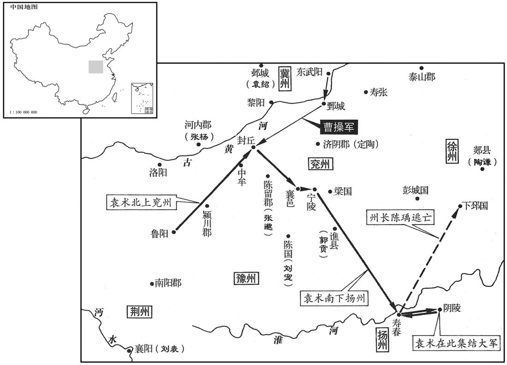
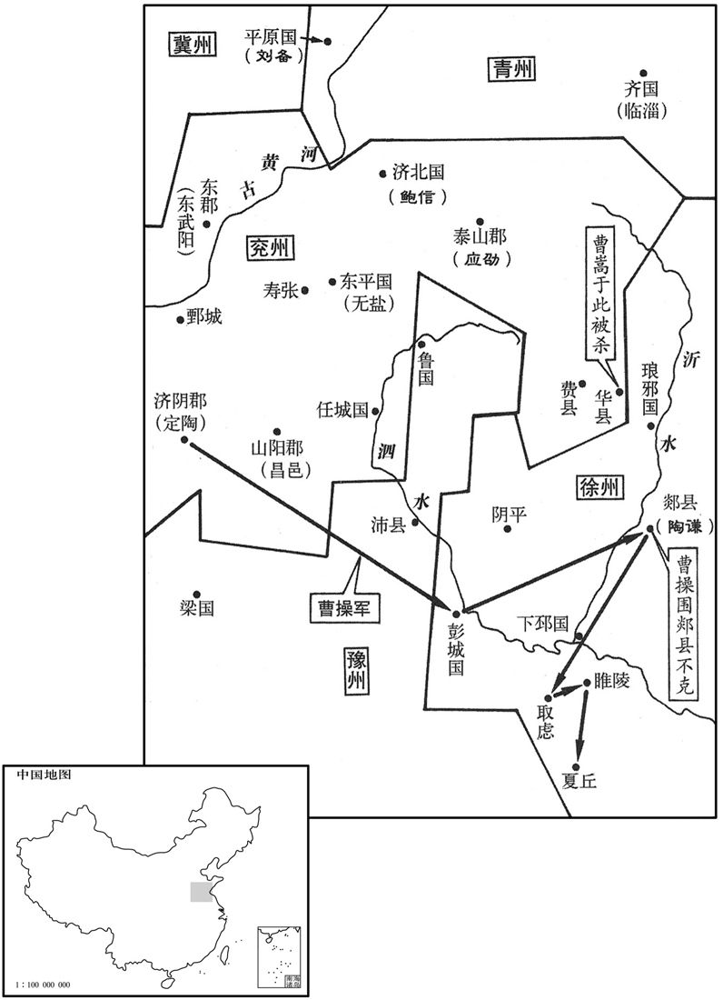

公元193年资治通鉴：本年记事、原文与白话对照
按原书编年位置阅读；追叙和史论不等于本年发生的事件。白话采用所据译本，缺译不以生成译文补齐。
卷60 · 本年记事
公元193年 · 汉孝献皇帝初平四年
四年〔（癸酉、一九三）〕
上传原文的注释括号有异常，字符原样保留；无法可靠划分的段落默认全文显示。
本年事件索引（现代整理）
- 日食
- 大赦
- 曹操击败袁术，袁术辗转夺取扬州
- 袁绍、公孙瓒停战，双方军民因连年战事疲敝
- 魏郡兵变，袁绍退驻斥丘
- 曹操回师定陶
- 陶谦遣使进贡，获任徐州牧
- 许劭预言陶谦外慕声名、内无实德，后来果然应验
- 扶风大雨雹
- 华山崩裂
- 周忠免太尉，朱儁接任
- 阙宣自称天子，陶谦将其击杀
- 连续大雨二十余日，民居被淹
- 袁绍连战击破于毒及黑山诸部，仍未能消灭张燕
- 袁绍遣吕布领司隶校尉并暗中图杀，吕布逃往张杨
- 陶谦部将杀害曹嵩及其家属，曹操攻破徐州多座城池
- 曹操军在泗水坑杀数十万百姓，河水为之断流
- 曹操攻取虑、睢陵、夏丘，沿途大肆屠戮
- 京师地震
- 有星孛于天市
- 杨彪免司空，赵温接任
- 公孙瓒攻破刘虞并将其处死，幽州士民哀悼刘虞
- 田畴冒险赴长安，为刘虞传递奏章
- 田畴拒绝朝廷授官，谴责公孙瓒杀害刘虞后获释
- 田畴入徐无山聚众立约，安抚百姓并招抚乌桓、鲜卑
- 地震
- 赵温免司空，张喜接任

本年形势与背景参考图

本年形势与背景参考图
春，正月，甲寅朔，日有食之。
春季，正月，甲寅朔（初一），出现日食。
丁卯，赦天下。〔考异曰：袁纪，五月丁卯赦。今从范书。〕
丁卯（十四日），大赦天下。
曹操军甄城。〔甄城县，属济阴郡。贤曰：今濮州县也。甄，音绢，蜀本作「鄄」，为是。〔【章：甲十一行本正作「鄄」；乙十一行本同；张校同。】〕袁术为刘表所逼，引兵屯封丘，黑山别部及匈奴于扶罗皆附之。曹操击破术军，遂围封丘；术走襄邑，又走宁陵。〔封丘、襄邑二县属陈留郡；宁陵县属梁国。宋白曰：封丘，古封国之地，左传所谓「封父之繁弱」是也，汉为封丘县。宁陵县，古宁城，汉高祖改为宁陵县。〕操追击，连破之。术走九江，扬州刺史陈瑀拒术不纳。术退保阴陵，集兵于淮北，复进向寿春；〔阴陵、寿春二县，皆属九江郡。寿春，扬州刺史治所。复，扶又翻。〕瑀惧，走归下邳，术遂领其州，兼称徐州伯。李傕欲结术为援，以术为左将军，封阳翟侯，〔阳翟县，属颍川郡。〕假节。
曹操驻军甄城。袁术受荆州刺史刘表军队的逼迫，率军移驻封兵，黑山军的一个分支部队与南匈奴单于於扶罗都归附袁术。曹操击败袁术军队，于是包围封丘。袁术退到襄邑，又退到宁陵，曹操在后面追击，接连打败袁术。袁术逃到九江，扬州刺史陈率军抵御，不许袁术入境。袁术退守阴陵，在淮河以北集结部队，又向寿春进军。陈大为恐惧，逃回下邳。于是袁术占领寿春，自称扬州刺史，兼称徐州伯。李想拉拢袁术作外援，便任命袁术为左将军，封阳翟侯，假节。
袁绍与公孙瓒所置青州刺史田楷连战二年，士卒疲困，粮食并尽，互掠百姓，野无青草。绍以其子谭为青州刺史，楷与战，不胜。会赵岐来和解关东，瓒乃与绍和亲，各引兵去。
袁绍与公孙瓒所委任的青州刺史田楷连续作战两年，军队疲惫不堪，粮食全都吃尽，因抢掠百姓致使田地间连青草都难得见到。袁绍任命自己的儿子袁谭为青州刺史，田楷进攻袁谭，未能取胜。正好朝廷派赵岐前来调解关东各州、郡的矛盾，公孙瓒于是与袁绍结为儿女亲家，各自率兵退回。
三月，袁绍在薄落津。〔续汉志，安平国经县西有漳水津，名薄落津。巨鹿郡瘿陶县有薄落亭。水经注，漳水径巨鹿县故城西，水有故津，谓之薄落津。〕魏郡兵反，与黑山贼于毒等数万人共覆邺城，杀其太守。绍还屯斥丘。〔斥丘县，属巨鹿郡。贤曰：故城在今相州成安县东南。十三州志云：土地斥卤，故云斥丘。〕
三月，袁绍驻军薄落津。这时，他属下魏郡的士兵叛变，与黑山军于毒等数万人联合，攻占邺城，杀死魏郡太守。袁绍率军回到斥丘。
夏，曹操还军定陶。
夏季，曹操大军回到定陶。
徐州治中东海王朗及别驾琅邪赵昱说刺史陶谦曰：「求诸侯莫如勤王，〔左传晋大夫狐偃之言。说，输芮翻。〕今天子越在西京，宜遣使奉贡。」谦乃遣昱奉章至长安。诏拜谦徐州收，加安东将军，封溧阳侯。〔漂阳县属丹阳郡。〕以昱为广陵太守，朗为会稽太守。
徐州治中、东海人王朗和别驾、琅邪人赵昱向刺史陶谦建议说：“要想求得诸侯的信任与拥护，最好的办法莫过于尊奉君王。如今天子流亡在长安，应该派遣使者前去进贡。”陶谦于是派赵昱作为使节，携带呈给皇帝的奏章到长安。献帝下诏任命陶谦为徐州牧，加授安东将军，封为溧阳侯。任命赵昱为广陵太守，王朗为会稽太守。
是时，徐方百姓殷盛，〔古语多谓州为方，故八州八伯谓之方伯。书曰「惟此陶唐，有此冀方」，诗曰「徐方不庭」是也。〕谷实差丰，流民多归之。而谦信用谗邪，疏远忠直，〔远，于愿翻。〕刑政不治，由是徐州渐乱。许劭避地广陵，谦礼之甚厚，劭告其徒曰：「陶恭祖外慕声名，内非真正，〔陶谦，字恭祖。〕待吾虽厚，其势必薄。」遂去之。后谦果捕诸寓士，人乃服其先识。
当时，徐州地区百姓富裕，粮食丰足，各地流民多来投奔。但是陶谦信任奸佞小人，疏远忠直之士，司法及政务都管理不善，使得徐州政局也逐渐混乱。许劭避难来到广陵，陶谦对他的礼节和待遇都很厚。许劭对他的门徒们说：“陶谦外表上追求尊重贤才的名声，但实际上他并不是正人君子。现在待我虽厚，将来必然会改变。”于是，他离开徐州。后来，陶谦果然大肆逮捕流亡到徐州的士大夫，人们才佩服许劭的先见之明。
六月，扶风大雨雹。〔雨，于具翻。〕
六月，扶风郡下了大冰雹。
华山崩裂。〔华，户化翻。〕
华山发生山崩。
太尉周忠免，以太仆朱为太尉，录尚书事。
太尉周忠被免职，任命太仆朱俊为太尉，主持尚书事务。
下邳阙宣聚众数千人，〔贤曰：风俗通曰：阙，姓也，承阙党童子之后；纵横家有阙子著书。〕自称天子；陶谦击杀之。〔考异曰：范书谦传作「阎宣」。今从魏志武纪及谦传。魏武纪又曰：「谦与宣共举兵，取泰山华、费，掠任城。」谦传亦云：「谦始与合从，从遂杀之，并其众。」按谦据有徐州，托义勤王，何藉宣数千之众而与之合从！盖谦别将与宣共袭曹嵩，故曹操以此为谦罪而伐之耳。〕
下邳人阙宣聚集百姓数千人，自称天子。陶谦击斩阙宣。
大雨，昼夜二十余日，漂没民居。
大雨昼夜不停地持续二十余日，淹没了许多百姓的住宅。
袁绍出军入朝歌鹿肠山，〔朝歌县，属河内郡。贤曰：朝歌故城在今卫县西。续汉志曰：朝歌有鹿肠山。〕讨于毒，围攻五日，破之，斩毒及其众万余级。绍遂寻山北行，进击诸贼左髭丈八等，皆斩之。又击刘石、青牛角、黄龙左校、郭大贤、李大目、于氐根等，复斩数万级，皆屠其屯壁。遂与黑山贼张燕及四营屠各、鴈门乌桓战于常山。〔复，扶又翻。屠，直于翻。屠各，匈奴种。〕燕精兵数万，骑数千匹。绍与吕布共击燕，连战十余日，燕兵死伤虽多，绍军亦疲，遂俱退。
袁绍率军深入朝歌境内的鹿肠山，讨伐于毒。围攻五日，攻破于毒，斩杀于毒及其部下万余人。袁绍于是顺山北行，进攻左髭丈八等乱匪，将乱匪全部斩死。又进击刘石、青牛角、黄龙左校、郭大贤、李大目、于氐根等，又斩杀数万人，乱匪的营寨全部遭到屠戮。最后，袁绍与黑山军张燕以及四营的匈奴屠名部落和雁门的乌桓部落在常山交战。张燕有精兵数万人，战马数千匹。袁绍与吕布联合进攻张燕，一连战斗了十余天，张燕军死伤虽多，袁绍军也感到疲惫，于是双方自撤退。
吕布将士多暴横，〔横，户孟翻。〕绍患之，布因求还雒阳。绍承制以布领司隶校尉，遣壮士送布，而阴图之。布使人鼓筝于帐中，〔说文：筝，乐也，鼓弦竹身。十三弦，蒙恬所造。一说：秦人薄义，父子争瑟而分之，因以为名。按筝制与瑟同，瑟二十五弦而筝十三弦，故云然。风俗通：筝，秦声，五弦、糂身。筝者，上圆象天，下平象地，中空准六合，弦柱十二拟十二月，乃仁智之器也。今并、凉二州筝形如瑟，不知谁改也。释名：筝，施弦高；筝筝然，音争。〕密亡去，送者夜起，斫帐被皆坏。明旦，绍闻布尚在，惧，闭城自守。布引军复归张杨。
吕布部下的将士多凶横强暴，袁绍颇为厌恨。吕布于是请求返回洛阳。袁绍用皇帝的名义任命吕布兼任隶校尉，派遣精壮武士护送吕布，命令他们暗中将他害死。吕布命人在他的帐内弹筝，自己悄悄地溜走了。武士们乘夜袭击吕布，帐篷和床被全部砍坏。第二天早晨，袁绍得知吕布仍然活着，大为恐惧，下令关闭城门，严加防守。吕布率军再度依附张杨。
前太尉曹嵩避难在琅邪，〔难，乃旦翻。〕其子操令泰山太守应劭迎之。嵩辎重百余两，〔重，直用翻。两，音亮。〕陶谦别将守阴平，〔阴平县，属东海郡。贤曰：故城在今沂州承县西南。〕士卒利嵩财宝，掩袭嵩于华、费间，杀之，〔前汉志，华、费二县皆属泰山郡。续汉志，泰山有费县，无华县，盖并省也。水经：时水南过华县东，又南过费县东，入沂。贤曰：费县故城，在费县东北。费，音秘。并少子德秋。操引兵击谦，攻拔十余城，至彭城，大战，谦兵败，走保郯。〔郯县，属东海郡，徐州刺史治所。〕
两版字句有差异，建议核对原文。
前任太尉曹嵩在琅邪躲避战乱，他的儿子曹操命令泰山郡太守应劭迎接曹嵩到兖州。曹嵩携带辎重一百余车，陶谦的一个部将驻守在阴平县，其士兵贪图曹嵩的财产，于是在华县与费县的交界处发动袭击，杀死曹嵩和他的小儿子曹德。秋天，曹操率军进攻陶谦，攻克十余城。到达彭城时，与陶谦的军队展开大战，陶谦战财，逃到郯县固守。
初，京、雒遭董卓之乱，民流移东出，多依徐土，遇操至，坑杀男女数十万口于泗水，水为不流。〔为，于伪翻。〕
先前，洛阳一带遭受董卓之乱，百姓向东迁徒，大多投奔徐州。这次遇到曹操到来，男女老幼数十万人被驱赶到泗水河中淹死，尸体阻塞了河道，致使水不能流。
操攻郯不能克，乃去，攻取虑、睢陵、夏丘，〔三县皆属下邳国。杜佑曰：泗州下邳县北有汉武原故城，又北有郯县故城。睢陵故城在下邳东南。夏丘，尧封禹为夏伯，邑于此，汉为夏丘县。师古曰：取，音趋，又音秋。虑，意庐。睢，音虽。夏，户雅翻。〕皆屠之，鸡犬亦尽，墟邑无复行人。
曹操围攻郯县，未能攻下，于是离开，攻取虑、睢陵、夏丘三县，所过之处全都遭到屠戮，鸡犬不留，旧城废址不再有行人。
冬，十月，辛丑，京师地震。
冬季，十月，辛丑（二十二日），京城长安发生地震。
有星孛于天市。〔孛，蒲内翻。〕
有异星出现在天市星旁。
司空杨彪免。丙午，以太常赵温为司空，录尚书事。
司空杨彪被免职。丙午（二十七日），任命太常赵温为司空，主持尚书事务。
刘虞与公孙瓒积不相能，瓒数与袁绍相攻，〔数，所角翻；下同。〕虞禁之，不可，而稍节其禀假。瓒怒，屡违节度，又复侵犯百姓。虞不能制，乃遣驿使泰章陈其暴掠之罪，瓒亦上禀粮不周。〔上，时掌翻。〕二奏交驰，互相非毁，朝廷依违而已。〔依违，言甲奏上则依甲而违乙，乙奏上则依乙而违甲，无决然之是非也。〕瓒乃筑小城于蓟城东南以居之，〔蓟县，属广阳国，幽州牧所治也。蓟，音计。虞数请会，瓒辄称病不应；虞恐其终为乱，乃率所部兵合十万人以讨之。时瓒部曲放散在外，仓卒掘东城欲走。〔卒，与瘁同。〕虞兵无部伍，不习战，又爱民庐舍，敕不听焚烧，戒军士曰：「无伤余人，杀一伯珪而已。」〔公孙瓒，字伯珪。〕攻围不下。瓒乃简募锐士数百人，因风纵火，直冲突之，虞众大溃。虞与官属北奔居庸，〔居庸县，属上谷郡。胡峤曰：自幽州西北入居庸关。未祁曰：唐妫州怀戎县东南五十里有居庸塞，东连卢龙、碣石，西属太行、常山，实天下之险。瓒追攻之，三日，城陷，执虞并妻子还蓟，犹使领州文书。会诏遣使者段训增虞封邑，督六州事；拜瓒前将军，封易侯。〔易县，前汉属涿郡，复汉省。〕瓒乃诬虞前与袁绍等谋称尊号，胁训斩虞及妻子于蓟市。故常山相孙瑾、掾张逸、张瓒等相与就虞，骂瓒极口，然后同死。〔掾，俞绢翻。〕瓒传虞首于京师，故吏尾敦于路劫虞首，归葬之。〔贤曰：尾，姓；敦，名。余按古有尾生。〕虞以恩厚得众心，北州百姓流旧莫不痛惜。〔流者，他州人流入幽州者也；旧者，旧着籍幽州者也。〕
两版字句有差异，建议核对原文。
幽州牧刘虞与公孙瓒之间的矛盾日益加深，公孙瓒数次与袁绍相互攻击，刘虞禁止无效，因而逐渐减少对公孙瓒的粮草供应。公孙瓒大怒，不断违背刘虞的命令，又经常侵掠百姓。刘虞无力制约，于是派遗上书陈述公孙瓒横暴掠夺百姓的罪状，公孙瓒也上书指责刘虞扣军粮。两人不断上奏，相互攻击，朝廷只能敷衍而已。于是公孙瓒在蓟城的东南修筑一座小城，率军在内居住。刘虞几次请他会商，他都称病不肯前往。刘虞担心他终将叛乱，于是率领部下合计十万大军，计伐公孙瓒。当时公孙瓒的部下都分散在外，仓卒之间掘开东城打算逃走，刘虞的部队没有纪律，缺乏训练，刘虞又爱惜百姓的房屋，下令不许纵火，他告诫士兵说：“不要伤害其他人，只杀公孙瓒一人。”因此围兵战斗力不强，未能攻克。公孙瓒于是挑选了几百名勇士，乘风纵火，直冲突围，刘虞军队一下子溃散，刘虞与部下官属向北逃到居庸关。公孙瓒赶来，围攻居庸关，三日后攻下，把刘虞及其妻子儿女捉回蓟城，仍让刘虞签署州府的文书。正在此时，朝廷派使者段训宣布献帝诏书，增加刘虞的封邑，让他总官六州的事务；任命公孙瓒为前将军、封为易侯。公孙瓒便乘机诬告刘虞先前曾与袁绍等人通谋要当皇帝，胁迫段训在蓟城的闹市处死刘虞及其妻子儿女。前任常山国相孙瑾，掾张逸、张瓒等一同自动聚到刘虞周围，对公孙瓒破口大骂，然后与刘虞一起被杀。公孙瓒把刘虞的头颅送往京城长安，刘虞的旧部尾敦在半路上截下头颅，送回安葬。刘虞为人宽厚，广施仁义，因此深得民心。幽州的百姓，无论是当地上著，还是流亡来的外乡人，无不痛惜他的惨死。
初，虞欲遣使奉章诣长安，而难其人，众咸曰：「右北平田畴，年二十二，年虽少，〔少，诗照翻。〕然有奇材。」虞乃备礼，请以为掾。具车骑将行，畴曰：今道路阻绝，寇虏纵横，称官奉使，为众所指。愿以私行，期于得达而已。」虞从之。畴乃自选家客二十骑，俱上西关，出塞，傍北山，〔傍，步浪翻。西关，即居庸关。北山，即阴山。〕直趣朔方，循间道至长安致命。〔趣，七喻翻。间，古苋翻。〕
当初，刘虞想派遗使者到长安去呈送奏章，但难以找到合迁的人选。众人都说：“右北平人田畴，今年二十二岁，年纪虽轻，然而却有奇才。”于是刘虞送上礼物，请他做自己的僚属。车马备好，将要出发的时候，田畴说：“如今道路阻断，盗寇横行，如果公开官方使者的身份，必会成为他们劫掠的目标。我愿以平民百姓的身份私自前往，只要能到达长安就行。”刘虞同意了他的建议。田畴便在自己的门客中挑选二十名骑士，一道从居庸关出塞，沿阴山直抵朔方郡，再走小路到达长安，向朝廷呈上刘虞的奏章。
诏拜畴为骑都尉。畴以天子方蒙尘未安，不可以苛佩荣宠，〔荷，下可翻。〕固辞不受。得报，驰还，比至，虞已死，〔比，必寐翻。〕畴谒祭虞墓，陈发章表，〔章表，当依下文作章报。〕哭泣而去。公孙瓒怒，购求获畴，谓曰：「汝不送章报我，何也﹖」畴曰：「汉室衰颓，人怀异心，唯刘公不失忠节。章报所言，于将军未美，恐非所乐闻，〔乐，音洛。〕故不进也。且将军既灭无罪之君，又雠守义之臣，畴恐燕、赵之士皆将蹈东海而死，莫有从将军者也。」瓒乃释之。
献帝下诏任命田畴为骑都尉。田畴认为皇帝流亡，蒙受垢辱，尚未安定，自己不能任官享受荣耀，因而坚决辞让不受。他得到朝廷回复的章报后，就急速赶回幽州。但等他回来时，刘虞已被杀害。田畴到刘虞墓前祭拜，陈放朝廷章报，并汇报其中内容，然后痛哭离去。公孙瓒知道后，大怒，悬赏捉拿田畴。捉到后，公孙瓒问田畴说：“你为什么不把朝廷的章报送给我？”田畴说：“汉朝王室势力衰微，人人都怀有异心，只有刘虞没有失去忠贞的节操。章报中的内容，对将军并没有赞美之词，恐怕也不是将军所愿意看到的，因此我没有送来。而且，将军既然杀害无罪的上级，又分视固守节义的臣僚，我恐怕燕、赵地区的豪杰之士都将跳到东海里淹死，而没有人肯追随将军。”公孙瓒只好将他释放。
畴北归无终，〔无终县，属右北平郡，春秋无终子之国，畴盖其县人。宋白曰：无终，唐为蓟州玉田县。〕率宗族及他附从者数百人，扫地而盟曰：「君仇不报，吾不可以立于世！」遂入徐无山中，〔徐无县，属右北平郡，有徐无山。〕营深险平敞地而居，躬耕以养父母，〔养，羊亮翻。〕百姓归之，数年间至五千余家。畴谓其父老曰：「今众成都邑，而莫相统一，又无法制以治之，〔治，直之翻。〕恐非久安之道。畴有愚计，愿与诸君共施之，可乎﹖」皆曰：「可！」畴乃为约束，相杀伤、犯盗、诤讼者，〔诤，读曰争。晋王沈释时论：闟茸勇敢于饕诤。计韵平声。〕随轻重抵罪，重者至死，凡一十余条。又制为婚姻嫁娶之礼，与学校讲授之业，〔校，户教翻。〕班行于众，众皆便之，至道不拾遗。北边翕然服其威信，乌桓、鲜卑各遣使致馈，畴悉抚纳，令不为寇。
田畴回到无终县，率领宗族以及归附他的数百人，扫地而盟誓说：“刘虞之仇不报，我不能再活在世上！”于是进入徐无山中，在深险之处找到一块平地，建立营寨居住。他亲自进行耕作，以奉养父母。百姓前来投奔，数年间增加到五千余家。田畴对乡里父老说：“如今大家聚集到一起，已形成村镇，但不相统一，又没有法律来约束，这恐怕不是维持长久安定的方式。我有一个计划，愿意与诸位父老一起实施，可以吗？”大家都说：“可以！”于是，田畴制订法令，凡是相互杀伤、偷盗以及因争吵而告状的人，按照情节轻重予以处罚，最重的判处死刑，共十余条。他又制定婚姻嫁聚的礼仪和学堂讲授的课程。法令制订后，向众人公布实行，大家都乐于遵循，甚至路不拾遗。北方边塞地区的人都很敬服田畴的威信，乌桓、鲜插部落分别派来向田畴致意，并送上礼物。田畴对他们一律安抚接纳，让他们不要侵扰作乱。
十二月，辛丑，地震。
十二月，辛丑（二十二日），发生地震。
司空赵温免。乙巳，以卫尉张喜为司空。
司空赵温被免职。乙巳（二十七日），任命卫尉张喜为司空。